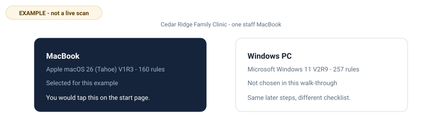
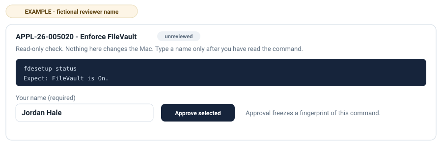
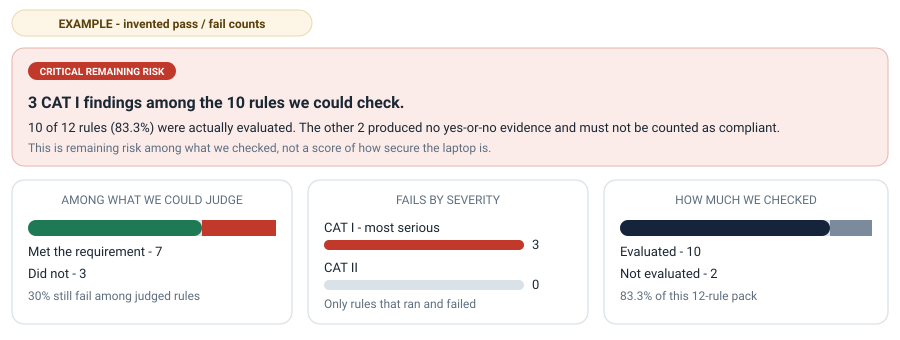

Demo / example run
A first CAT I scan, shown as a story
APPL-26-005020) are real IDs from the Apple macOS 26 (Tahoe) V1R3 STIG that the Defense Information Systems Agency (DISA) publishes for the Department of Defense. This website still does not scan any machine.
You do not need to click through a real scan to understand this tool. The path is short: pick the computer, choose the most serious rules, download a program, approve each check on that machine, and read a report that says what was actually judged.
This page follows one imaginary first pass. A small family clinic — call it Cedar Ridge Family Clinic — has one staff MacBook. There is no security team. The office manager wants to know whether the machine meets the most serious items on the public DoD checklist for that operating system. They will not harden the whole guide today. They will start with CAT I: DISA’s highest severity.
1 · Pick the computer
On the start page the clinic chooses MacBook. That loads the filed plain-English list for Apple macOS 26 (Tahoe) V1R3 — 160 rules in the validated guide this project ships. Windows PC is the other desk choice. Servers, Linux and databases stay on the command line; this website is for a desk Mac or Windows PC.
Nothing is uploaded. The page is static GitHub Pages. Choosing an operating system only loads JSON this repository already published.

2 · Select CAT I only
The rules page lists every requirement in ordinary language: what it asks, how serious it is, and whether a machine can check it. Severity uses DISA’s own ranking. CAT I is high. CAT II is medium. CAT III is low.
For a first pass the clinic taps CAT I only. In this example that ticks 12 rules and clears the rest. FileVault, automatic login, Gatekeeper, System Integrity Protection, and a few network services sit in that set. A CAT II row about the screen-saver password stays unticked. That is a deliberate first cut, not a claim that CAT II does not matter.

Some CAT I items need a configuration profile or a person at the keyboard. The list says so. The scanner will not pretend those produced a yes-or-no answer later.
3 · Download a local scanner
The download step builds a zip for that selection: STIG-Scanner-macOS.zip. It is this project’s Python files plus a selection.json that names the twelve rules. The website still has not run a host check. Browsers on this site cannot and do not scan the visitor’s computer.

On the Mac, the office manager right-clicks STIG Checker.command and chooses Open. The local page binds to 127.0.0.1. If Python is missing, the program can offer a private copy from python.org. That copy is not a system-wide install.
4 · Approve every check
Every shipped check is unreviewed until a named person reads the exact command and types their name. Approval freezes a fingerprint of the command, the comparison, and the expected value. If those bytes change later, the check is treated as drifted and will not run.
In this story Jordan Hale — a fictional name — reads fdesetup status for FileVault, sees that it is a read-only command, and approves it. They do the same for the other commands they accept. They leave two checks unapproved because those need a profile they have not built yet. Unapproved checks do not run in a normal scan. The report will say so. The command line can force an unreviewed run with --include-unreviewed (the local page has a matching optional checkbox); those results are labeled untrusted and are not a normal approved scan or accreditation evidence. The program never approves a check on a person's behalf.

A safety gate still refuses anything that looks like a change: writes, network clients, privilege escalation, destructive verbs. Approval is not a licence to mutate the system. The scan itself only looks. After a scan, stig-assess and stig-harden can draft a Plan of Action and candidate fix scripts; those stay drafts until a named person acts, and apply is dry-run by default.
5 · Read the results and the risk story
After the approved checks run, the local page writes JSON, Markdown and a PDF next to each other. Coverage is stated first. In this invented result set:
- 12 rules were in the pack.
- 10 produced a pass or a fail (83.3% evaluated).
- 2 produced no yes-or-no evidence (not approved, or not a machine check).
- 7 met the requirement. 3 did not. All three failures were CAT I.
Because CAT I failed, the remaining-risk headline is Critical. That word is about the rules that were judged, not a percentage of how secure the laptop is. Silence is not compliance. The two unevaluated rules must not be counted as passing.

Sample findings (invented)
| Rule | Result | Plain meaning |
|---|---|---|
APPL-26-005020 |
fail | FileVault was not on. A lost Mac could be read. |
APPL-26-002066 |
fail | Automatic login was still enabled. |
APPL-26-999999 |
fail | Security updates were older than the 30-day window in the rule. |
APPL-26-002038 |
pass | The built-in TFTP service was not running. |
APPL-26-002060 |
not evaluated | Needs a configuration profile Jordan did not approve yet. |
The next step in the real program is the same as in this story: start with the CAT I failures, then decide whether to approve more checks or stop. Modules 3 and 4 already ship: stig-assess drafts Plan of Action and Milestones entries a named person must approve and is the only one who can close; stig-harden drafts remediation scripts, dry-run by default, with --apply-for-real refused in CI. This example does not change settings for you.
What this example is not
- It is not a scan of your computer and not evidence about any real clinic.
- It is not an official Department of Defense product. DISA publishes the STIGs; this project is independent open source under an MIT licence.
- It is not a claim that twelve CAT I rules equal a complete baseline. A full macOS 26 guide in this repository has 160 rules.
- It is not permission to skip a named approval for a normal scan. On a real machine you type your own name after you have read each command. The command line can force an unreviewed run; those results are labeled untrusted and are not a normal approved scan.
Do the same steps for real
When you are ready, return to the start page, pick your own computer, and build a scanner for your own selection. Longer background essays live on the personal site, not here.